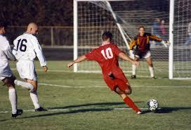

Welcome to our comprehensive guide on the strategic
intricacies that shape the world's most electrifying sport
From the dynamic formations to the strategic substitutions, we delve
into the tactical masterstrokes that dictate the outcome of matches on
the biggest stages
Mastering the Art of
Football Tactics
⚽ Flexibility
⚽ Counter-Pressing
⚽ Creative Midfield Maestros
⚽ In the realm of football tactics, few strategies
are as thrilling and effective as the counterattack. It's a swift,
calculated maneuver that turns defensive situations into lightning-fast
offensive opportunities.
Gallery of Football Brilliance

Unforgettable moments, frozen in time.
For further exploration of the football world, check out official
websites like FIFA
Football is more than just a game; it's a symphony of tactical
brilliance orchestrated by players and managers alike